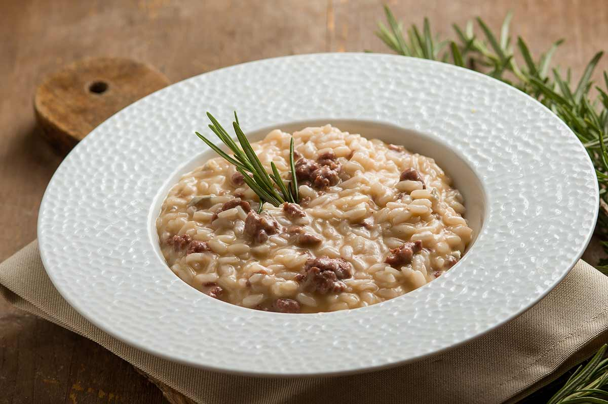

Risotto with salsiccia is a tasty way to warm a cold winter night. With its creaminess and rich taste this risotto will tingle your taste buds.
Ingredients
- Two sausages
- Rice 150 gr
- One onion
- One liter of broth
- Half a glass of white wine
- Parimigano cheese to liking
- One spoon of butter
- Olive oil
- Black pepper
- Two small rosmary branches
Steps
- Chop and mince the onions, prepare the sausages by removing the skin.
- Warm the broth, add the onions, oil and sausages in a pan and cook them.
- After the ingredients in the pan are ready add the rice and broth.
- Keep stirring until the broth evaporates and the rice is creamy, add the butter.
- Let it cool down for a few minutes, decorate with rosmary branches and serve.
Return to top
Return to main page